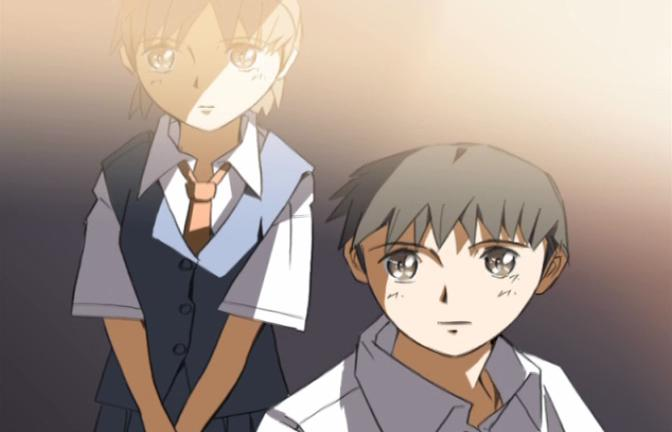

Disclaimer: this review covers the short film "Voices of a Distant Star," and partially discusses the short film "She and Her Cat."Makoto Shinkai might be a farily well-known anime director today, but he entered the industry in an unusual manner. Working with independent film studio and distributor Comix Wave Films, most of his movies are very much independent, unplagued by commercial investors looking for a profit. A true artist's vision. But this type of freedom isn't without cost. His first film, "Voices of a Distant Star," was famously made almost entirely alone, with Shinaki's personal Macintosh computer, Adoboe Photoshop and Adobe After Effects.Yes, almost all short films today are made this way: sometimes with a single animator and a single computer. But "Voices of a Distant Star" was made in 2002, a time when commercial anime productions were just starting to include digital workflows for the first time. And for a single filmmaker to make an animated film? At a time when production values for Hollywood animated films were breaking new records, a one-man team was absolutely unheard of. It was a huge technical achievement and showed off Shinaki's passion for the medium.The film also shows off Shinaki's personal preference for themes of love across impossible boundaries, something that would carry across all of his work from that point on. The story is mostly from the perspective of Mikako, a schoolgirl who recalls her friendship and relationship with a boy named Noboru. After graduating, Mikako is immediately recruited to help fight a war in space many lightyears away, piloting a mecha robot against an alient race. Mikako and Noboru still communicate, each with a mobile phone, sending text messages across the galaxy. But as Mikako travels farther and farther away, the texts take longer to receive, sometimes years for a single message. And as Mikako doesn't age as quickly in space as Noboru does on Earth, it seems they are bound to never meet again, at a time when Mikako feels utterly alone. It is a powerful idea, and at the time was quite novel. However, Shinkai's greatest strengths seem to be in the romantic relationship: while the science-fiction part makes for a good way to channel the core plot, its inclusion feels a little forced (a similar comment could be made for his follow-up feature film "The Place Promised in Our Early Days," but has significantly improved since then after relying less on the story details). If it weren't for the humanoid space-robot, I wouldn't call this anime, instead saying it is more universal than that. But there is a Gundam-style mecha fighting shape-shifting aliens, helping expand the short film to its 25-minute length. Shinkai was likely inspired by other anime to do this, and it's a shame he couldn't feel confident enough to tread his own path without relying on such tropes.Speaking of the story, Nobaru's place in it is almost entirely as a object, not having anything to do on Earth except to wait for text messages and ponder their relationship, all while Mikako continues to risk her life to protect Earth. And the ending after the climatic battle also fails to satisfy as a conclusion. Apparently, a subsequent manga adaptation offers a better ending, but that doesn't entirely excuse the short. As inspired as the idea is, a little more time on the plot outline might have done some good. Visually, the character designs look fairly good, and while the 3D mech models are instantly dated, they don't look far off from what most other anime had at the time. There are some neat camera shots to better show the emotional state of the characters in any given moment. There isn't much animation, but enough for the sake of the story. And did I mention THIS WAS ALL DONE ON A HOME MAC COMPUTER? BY ONE GUY? The amazement of that probably makes me a little bias in its favor, but not undeservedly so."Voices of a Distant Star" is early enough to be out of print, and unlikely to ever receive a reprint, despite its DVD release in North America by ADV Films. Today, it is possible to get a copy by purchasing the "global" Bluray edition of "5 centimeters per second": a bit expensive, but it has multiple language options for the main film, and includes "Distant Star" and "She and Her Cat" as bonus features, complete with English subtitles. I did manage to get my hands on the original ADV DVD afterwards (also including "Her Cat"), so I own both copies. The ADV release does have an English dub for "Distant Star," as well as two Japanese dubs (one of which has Shinkai and his fiancee of the time voicing the two characters). This type of story is a great outlet for actors to sound both emotional and down-to-Earth, and the dialogue script allows for that.Very briefly, I'll mention "She and Her Cat," since it was never packaged on its own to warrant its own review, and since it often gets tied to "Distant Star" to increase the runtime of the package. Technically, "She and Her Cat" is Shinkai's true-first short film, even if "Distant Star" is more well known. It's a simple story from the perspective of a cute pet cat, narrating a internal monologue of his daily events while noticing the behavior of his master, a young woman. It's simple, quiet, and a bit funnier and more light-hearted thanks to the cute kitty. As expected, the animation is virtually non-existent."Voices of a Distant Star" is an important milestone in indie animation the world over. It was unavoidable that it would become overrated in the minds of anime fans. Had it not gained a cult status, one might be able to blindly come by it and still walk away impressed. And if you like tender love stories, without too much action, comedy, moe-cuteness or fan-service, there aren't many other places in anime to find it. But one can defintely find it in Shinkai's easier-to-find movies, making "Distant Star" a movie without much further purpose.
- "Ani" More reviews can be found at : https://2danicritic.github.io/ Previous review: review_Violet_Evergarden_-_The_Movie Next review: review_Waiting_in_the_Summer